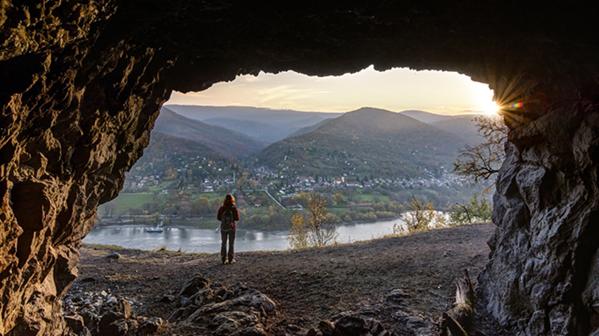
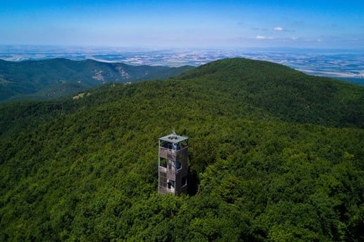
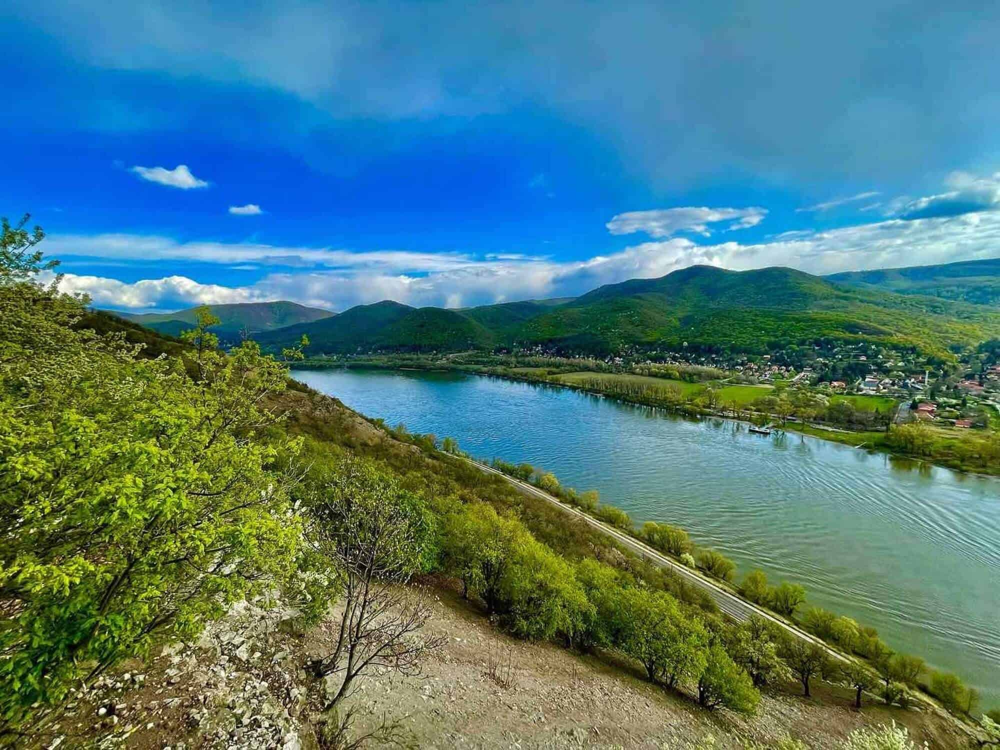
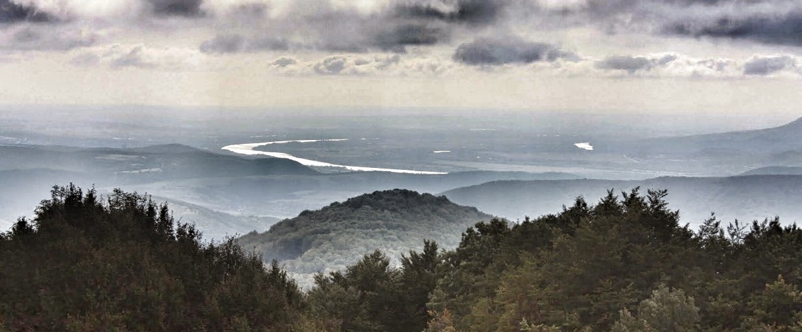
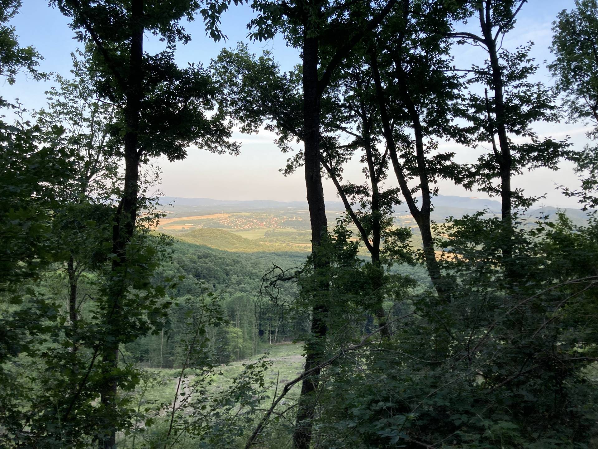
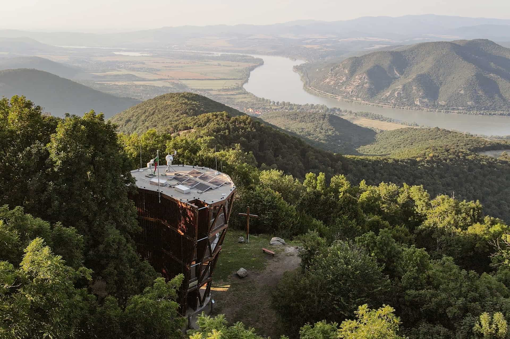
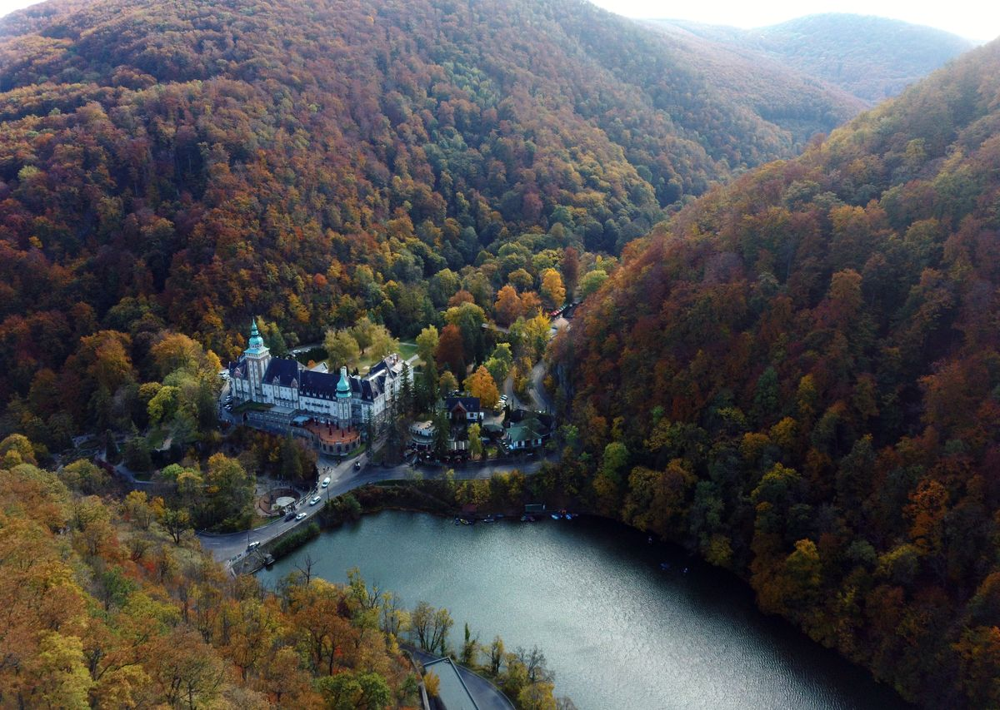

Útvonalak részletes leírásokkal
A következő oldalon a természetjárás gyakorlati oldalára fókuszálunk. Bemutatok több olyan túraútvonalat, amelyeket személyesen is bejártam, és amelyeket bátran ajánlok mindazoknak, akik szeretnék felfedezni Magyarország csodálatos tájait. Az útvonalak között találsz könnyű sétákat, közepesen nehéz körtúrákat, de néhány kihívást jelentő, hosszabb emelkedőkkel tarkított kalandot is. Minden túrához részletes információkat adok: indulási pont, táv, szintemelkedés, időtartam, valamint személyes tapasztalataimat és tippjeimet is megosztom. A túrák során készített képek segítenek vizuálisan is megismerni az útvonalat, és interaktív térképek révén könnyen követhetővé válnak az egyes szakaszok.
Zebegény - Hegyes-tető - Remete-barlang túra
Ez a túra a Dunakanyar egyik legszebb és legismertebb szakaszát járja be. Zebegényből indulunk, amely egy festői fekvésű település a Duna partján, könnyen megközelíthető vonattal is. A túra első szakasza a település keskeny, macskaköves utcáin vezet át, majd hamarosan erdei ösvényre térünk.
Az út fokozatosan emelkedik felfelé, először lankásan, majd egyre meredekebben, miközben a fák között egyre többször bukkan elő a Duna kék szalagja. A legmagasabb pont a Julianus-kilátó, amely a Hegyes-tetőn található, és lenyűgöző panorámát kínál a Dunakanyarra, Visegrádra és a Börzsöny vonulataira.
A kilátóból érdemes hosszabb pihenőt tartani: a 482 méteres magasságból messzire ellátni, és a szélben suhogó fák hangja igazán különleges hangulatot áraszt. Innen továbbhaladva a túra enyhén lejtős terepen folytatódik, több helyen is sziklás, de jól járható ösvényeken.
Az út következő érdekessége a Remete-barlang, amely egy természetes sziklaüreg, és a helyi legenda szerint egykor egy remete lakott benne. A barlang belseje nem nagy, de hangulata misztikus - különösen akkor, ha csendben időzünk benne néhány percet.
Itt érdemes megállni, egy kis uzsonnát elfogyasztani, és élvezni az erdő nyugalmát. A túra hátralévő szakasza egy kellemes, lejtős ösvényen visz vissza Zebegénybe. Útközben több helyen is nyílik kilátás a Dunára, és az erdő is változatos: tölgyesek, fenyvesek, és ritkásabb ligetes részek váltogatják egymást.
Tavasszal és ősszel különösen gyönyörű a táj - előbbi virágzó aljnövényzettel, utóbbi pedig színpompás lombkoronával ajándékoz meg. A túra teljes hossza körülbelül 9 kilométer, szintemelkedése nagyjából 400 méter, amit kényelmes tempóban 2,5-3 óra alatt be lehet járni.
Ajánlott rétegesen öltözködni, és stabil túracipőt viselni, különösen esős idő után, mert néhány szakasz csúszós lehet. Gyerekekkel is járható, bár a meredekebb emelkedők kisebbeknek fárasztóbbak lehetnek.
A túra végén érdemes megnézni Zebegény nevezetességeit is: a Kós Károly kilátót, a Szőnyi István Emlékmúzeumot, vagy akár megpihenni egy kávézó teraszán a Duna-parton.
Ez a túra remek választás lehet hétvégi kirándulásként, akár családdal, akár barátokkal indulunk útnak.
Nagy-Hideg-hegy túra Királyrétről
Haladó túrázóknak ajánlott, változatos emelkedőkkel és gyönyörű panorámákkal tarkított útvonal. Az út során felfelé kapaszkodunk a Magas-Tax irányába, majd a Nagy-Hideg-hegyen pihenhetünk meg egy hangulatos turistaházban. A túra különösen télen lenyűgöző, de havas időben fokozott odafigyelést igényel.
Táv: kb. 14 km | Szintemelkedés: ~700 m | Időtartam: 5 óra
Ez a túra a Börzsöny egyik legklasszikusabb és legnépszerűbb útvonala, amely komolyabb fizikai kihívást jelent, ugyanakkor felejthetetlen élményekkel ajándékoz meg. A kiindulópont Királyrét, amely autóval és kisvasúttal is könnyen megközelíthető. A település határából indulva eleinte széles, kényelmes erdei úton haladunk, de a terep hamar emelkedni kezd.
A túra első szakasza fenyvesekkel szegélyezett úton vezet, majd egyre meredekebbé válik, ahogy elérjük a Magas-Tax környékét. Ez a rész technikailag nem nehéz, de hosszabb emelkedőkkel tarkított, így jó állóképességet igényel. Cserébe a fáradozásunkért a természet minden lépésnél újabb látványosságokat kínál: mohás sziklák, hatalmas bükkfák és a mélyből felszálló madárhangok teszik különlegessé az utat.
Ahogy egyre magasabbra jutunk, a levegő frissebbé, a fény pedig áttetszőbbé válik. Az emelkedő végén egy tisztásra érünk, ahonnan már látható a Nagy-Hideg-hegyi turistaház - a túra egyik ikonikus pontja. A ház környéke mindig nyüzsgő: túrázók pihennek, teáznak vagy éppen melegednek a padokon, télen pedig síelők és hótalpas túrázók is megfordulnak itt.
A Nagy-Hideg-hegy csúcsa 864 méteres magasságban található, és tiszta időben csodás kilátást kínál a környező hegyekre és völgyekre. Télen a hegy havas arcát mutatja, és ha szerencsénk van, zúzmarás fák között haladhatunk, mint egy mesebeli erdőben. A turistaház kínál némi meleg ételt, teát, illetve fedett pihenőhelyet - ez különösen jól tud jönni hidegebb napokon.
A túra második fele lejtős szakaszokon vezet vissza Királyrétre, általában másik útvonalon - például a Rakodó-nyeregen vagy a Kisinóci turistaház érintésével. Ezek az ösvények kevésbé meredekek, de csúszósak lehetnek esős vagy havas időben, ezért a jó túracipő itt is elengedhetetlen.
Az út során találkozhatunk vadnyomokkal, őzekkel, és ha szerencsénk van, akár mókusokkal is. Tavasszal a völgyekben virágzó tavaszi hérics és ibolyák kísérnek, ősszel pedig aranyló lombtakaró borítja az ösvényeket.
A túra hossza körülbelül 14 km, szintemelkedése meghaladja a 700 métert, így közepesen nehéznek számít, de megfelelő tempóban bárki teljesítheti.
Ez a túra tökéletes választás mindazoknak, akik nemcsak mozogni szeretnének, hanem elmerülni a Börzsöny vadregényes világában. A természet közelsége, a változatos táj, és a Nagy-Hideg-hegy fenséges panorámája miatt ez az útvonal igazi klasszikus, amelyet újra és újra megéri bejárni.
A túrák listája folyamatosan bővül - érdemes időnként visszanézni!
Prédikálószék túra Dömösről
A Prédikálószék a Visegrádi-hegység egyik legszebb kilátóhelye, ahonnan pazar panoráma nyílik a Dunakanyarra. A túra kiindulópontja Dömös, amely könnyen megközelíthető autóval vagy busszal. A település központjából a piros háromszög jelzésen indulunk felfelé, eleinte a Malom-patak mellett haladva. A patakvölgy hűs árnyékot és kellemes csobogást kínál, ami különösen nyáron esik jól. Néhány kisebb fahídon is átkelünk, ami tovább fokozza a kaland hangulatát.
A Vadálló-kövekhez érve a terep meredekebbé válik, de közben fantasztikus sziklaképződmények mellett haladunk el. Ezek a különleges formájú bazaltoszlopok a hegység egyik legérdekesebb látnivalói. Innen tovább kapaszkodva elérjük a Prédikálószéket, ahol a nemrég épült, több szintes kilátóból tárul elénk a lélegzetelállító látvány. A kanyargó Duna, a szemben fekvő Börzsöny vonulatai és a Visegrádi-hegység dombjai egyszerre láthatók innen.
A csúcson érdemes hosszabb pihenőt tartani, piknikezni, és élvezni a panorámát. A visszaút történhet ugyanazon az ösvényen, vagy körtúrát is tehetünk a Szentfa-kápolna érintésével. Az útvonal teljes hossza körülbelül 12 km, a szintemelkedés 600 méter, így közepesen nehéz túrának számít. Tavasztól őszig bármikor bejárható, de télen jeges szakaszokra is számítani kell. A Prédikálószék túra élménye sokáig megmarad, főleg a kilátás miatt, ami az egyik legszebb Magyarországon.
Lillafüred - Szent István-barlang - Hámori-tó körtúra
Ez a túra a Bükk hegység egyik leglátványosabb és legváltozatosabb kirándulása, amely ötvözi a természeti szépségeket és a kulturális látnivalókat. Kiindulópontunk Lillafüred, a festői üdülőhely, amely a Hámori-tó partján fekszik. Már az induláskor megcsodálhatjuk a Palotaszállót és a függőkertet, ahol a vízesés 20 méterről zúdul alá. Innen rövid sétával érjük el a Szent István-barlang bejáratát, amely hazánk egyik legszebb cseppkőbarlangja. A barlang látogatása külön programot is megér, hiszen csodás cseppkőformák és földalatti termek várják a kirándulókat.
A túra innen a Hámori-tó partján folytatódik, amelyet körbesétálva minden oldalról megcsodálhatjuk a víztükrön visszaverődő hegyeket. A tó partján több pihenőhely és kilátópont is található, így kényelmes tempóban haladhatunk. Továbbindulva a Vadaspark felé vezető ösvényre térünk, ahol szerencsés esetben muflonokat, őzeket is láthatunk. Az útvonal ezután enyhén emelkedni kezd, bevezetve minket a Bükk sűrű erdőségeibe.
A túra egyik legnyugodtabb része a kis erdei tisztásokon áthaladó szakasz, ahol madárdal és a szél susogása kíséri utunkat. Visszatérve Lillafüredre, a Palotaszálló teraszáról újra megcsodálhatjuk a panorámát, amely minden évszakban más arcát mutatja. A teljes körút körülbelül 8 km hosszú, minimális szintemelkedéssel, így családoknak és kezdő túrázóknak is ajánlott. A túra során a tó, a barlang és az erdei ösvények kombinációja garantálja a változatos élményt. Ez a kirándulás tökéletes választás egy nyugodt, mégis látványos nap eltöltésére.